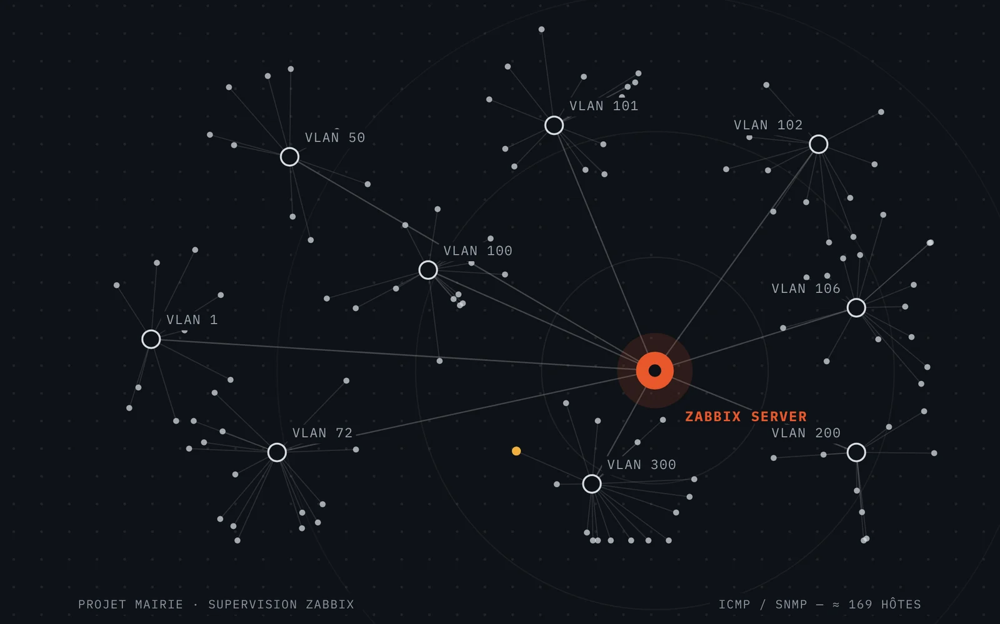

Projet Mairie
Supervision centralisée de l’infrastructure municipale avec Zabbix.
Déploiement de Zabbix 7.4 sur une VM Debian 13 hébergée sous VMware ESXi, découverte automatique ICMP / SNMP et classement des équipements découverts sur les réseaux de la mairie.
- Hyperviseur
- VMware ESXi
- Système
- Debian 13
- Supervision
- Zabbix 7.4
- Protocoles
- ICMP · SNMP

01 — ContexteUne administration encore manuelle
Pendant mon stage de juillet – août 2026 à la mairie des Clayes-sous-Bois, j’ai mis en place une solution de supervision centralisée de l’infrastructure informatique. Le parc est réparti sur plusieurs réseaux (VLAN) : serveurs, données, VoIP, caméras, école, libre-service… et son administration était jusque-là principalement manuelle.
Objectifs
- Installer Debian 13 sur une machine virtuelle VMware ESXi et y déployer le serveur Zabbix.
- Mettre en place la supervision ICMP et SNMP.
- Découvrir automatiquement les équipements présents sur les différents réseaux.
- Classer automatiquement les équipements par type : PC, switch, serveur, caméra, antenne, hyperviseur, imprimante / copieur, routeur…
- Identifier les imprimantes et copieurs à partir d’informations SNMP et de leur nom.
02 — ArchitectureUn serveur au centre, neuf réseaux autour
Le serveur Zabbix tourne dans une VM Debian 13 sur l’hyperviseur VMware ESXi. Il interroge les équipements en ICMP (disponibilité) et en SNMP (UDP 161), stocke les résultats dans MariaDB et les restitue dans l’interface web servie par Apache et PHP.
03 — Ma démarcheDe la VM au serveur opérationnel
- Créer la VM Debian 13 sous VMware ESXiRessources, carte réseau reliée aux VLAN supervisés, adresse IP fixe, puis service SSH pour l’administration à distance.
- Déployer Zabbix 7.4 depuis le dépôt officielServeur Zabbix, interface web (Apache + PHP), agent Zabbix et base MariaDB avec un utilisateur dédié.
- Configurer la supervision SNMPCommunauté SNMP, tests avec
snmpwalket ouverture des flux sur le pare-feu géré par Active Directory. - Créer les règles et les actions de découverteDes règles couvrant les réseaux à analyser, et des actions qui créent l’hôte, l’ajoutent au bon groupe et lui lient un modèle.
- Organiser, tester, dépannerGroupes d’équipements, tests de validation, gestion des doublons et diagnostic réseau pas à pas.
04 — Découverte automatiqueNe plus ajouter les équipements à la main
Zabbix analyse périodiquement des plages d’adresses IP. Chaque réponse ICMP ou SNMP produit un événement de découverte, et une action décide quoi faire de l’équipement.
Exemple de logique d’actionSI équipement découvert ET Discovery status = Up ET information SNMP = équipement réseau ALORS → créer / activer l’hôte → l’ajouter au groupe Switch ou Routeur → lier le modèle correspondant
Pour les imprimantes et copieurs, qui répondent au ping sans agent Zabbix, l’identification s’appuie sur un OID SNMP et sur le nom de l’hôte.
05 — RésultatsUne vue d’ensemble du parc
- Serveur Zabbix opérationnel sur une VM Debian 13 hébergée sous VMware ESXi.
- Supervision ICMP et SNMP en place, découverte automatique de plusieurs réseaux.
- Classement automatique en groupes mis en place pour les principaux types d’équipements, à finaliser pour les autres.
- Imprimantes et copieurs pris en compte grâce à l’identification SNMP.
06 — Difficulté rencontréeLa passerelle ne répondait pas
Lors de la mise en place, la connectivité vers la passerelle posait problème alors que le serveur DNS répondait. J’ai vérifié par étapes : interface, adresse IP, route par défaut, passerelle, DNS, puis accès aux réseaux supervisés.
Diagnostic pas à pasip addr # l’interface et l’adresse ip route # la route par défaut ping -c 4 <passerelle> ping -c 4 <serveur DNS>
07 — ÉvolutionsCe que j’ajouterais ensuite
- Finaliser la classification automatique de tous les types d’équipements.
- Configurer des alertes et des notifications adaptées.
- Passer en SNMPv3 lorsque les équipements le permettent.
- Créer des tableaux de bord par service ou par type d’équipement.
- Superviser plus finement les serveurs avec Zabbix agent 2 et sauvegarder régulièrement la base.
08 — CompétencesCe que le projet m’a fait pratiquer
Projet suivant
Projet Cloison